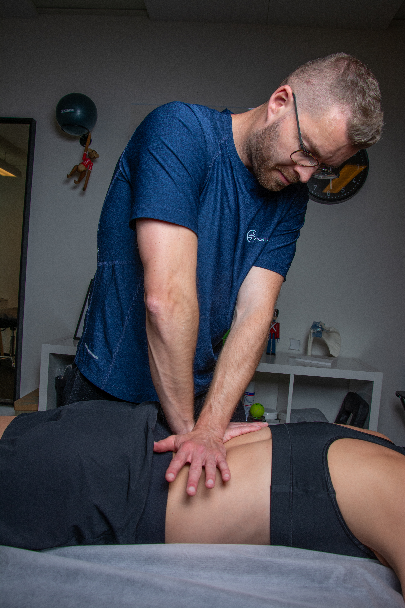
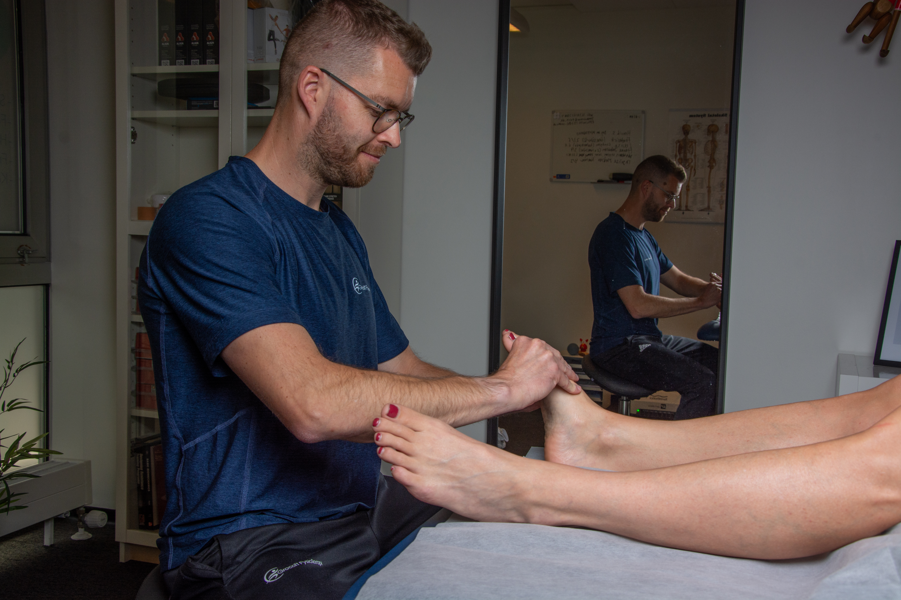

Fysioterapi med høj faglighed
Færre konsultationer
360° uddannelse i hele kroppen
Langtidsholdbare løsninger

Få sammensat et fleksibelt behandlingsforløb, som ikke bare fjerner smerten her og nu, men også på den lange bane og sikrer dig færre konsultationer.
"Vigtigst af alt, så har jeg opnået en større viden om mine muligheder og begrænsninger ud fra de fysiologiske udfordringer jeg døjer med. Hvilket for mig har lige så stor betydning, som at have færre smerter. Jeg rar altid følt mig mødt, hørt og forstået i forhold til mine somatiske smerter og evt. årsager bag."
"Jeg var bekymret for om det “bare” var det samme som jeg har prøvet andre steder uden den store effekt. Nicolai har en lidt andet tilgang end jeg tidligere har prøvet. Det har virkeligt været effektivt og en stor AHA oplevelse hvor meget jeg selv kan gøre for at afhjælpe mine smerter. Jeg vil specielt abefale Nicolai til andre som har prøvet "alt muligt andet" uden effekt"
"Allerede efter én behandling ved Nicolai mærkede jeg en tydelig forskel og nu har jeg ikke længere hovedpine, men kan holde smerterne væk ved at få en behandling ca hver anden måned. Det er dejligt at lægge pillerne på hylden, men det er især dejligt at slippe for de daglige smerter."

Behandlinger

Priser
Løsninger på kort og lang bane
Som fysioterapeut arbejder jeg ud fra et holistisk perspektiv, hvor kroppen ses som én helhed.
Når en klient kommer med en specifik smerteproblematik, fx smerter i knæet, så er det vigtigt at jeg ikke kun
fokuserer på knæet, men også ser på hvad der eksempelvis foregår i fødderne.
Der can ligge problematikker gemt,
man måske ikke havde regnet med. Ved hjælp af mine undersøgelser og erfaringer kan vi bringe dem frem i lyset.
En behandling for mig, handler ikke kun om at fjerne/reducere en smerteproblematik her og nu, men også på den lange bane.
Færre antal konsultationer
Tid er ofte ikke en luksus, vi har for meget af i sundhedssystemet. Det betyder at der ofte ikke kan sættes tid nok af til klienter.
Jeg har valgt at arbejde uden for overenskomst for at kunne afsætte den nødvendige tid, alt efter din problematik.
Et fysioterapeutisk forløb med høj faglighed og mere tid giver et langt bedre resultat.
I sidste ende betyder det et reduceret antal konsultationer, øget selvstændighed og et resultat, som hjælper dig på lang sigt.
360° Uddannelse og erfaring i kroppen
På briksen bruger jeg mange af mine manuelle kompetencer og teknikker, som jeg har med mig fra grunduddannelsen og mine mange kurser.
Jeg er ærlig og gør meget ud af at forklare hvad jeg laver i mine behandlinger, valg af øvelser osv.
Jeg arbejder meget med ledmobiliseringer, myofascial release[?], men også med bløddelsbehandling (massage).
Mine behandling og vurderinger, tager som regel udgangspunkt i kroppens biomekanik[?] og kliniske tegn[?] og symptomer.
Tilfredsstillende hverdag - nye veje
Kroppen udsættes for mange belastninger i vores hverdag gennem hele livet og de fleste vil før eller siden mærke en reaktion fra kroppen, hvilket er helt naturligt.
Det der bliver vigtigt her er hvordan vi efterfølgende håndterer vores udfordringer og smerter.
Mit mål er altid at hjælpe mine klienter til en så aktiv og tilfredsstillende hverdag som muligt.
Denne proces har jeg arbejdet meget med igennem min karriere.